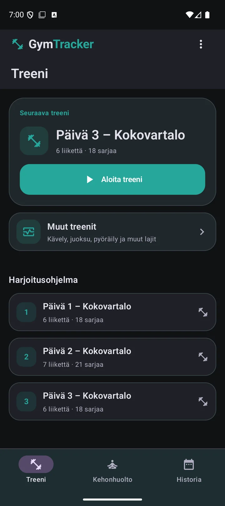

Sisällysluettelo — valitse aihe
GymTrackerin käyttöohje
Vähemmän säätöä. Enemmän treeniä.
Suunnittele, kirjaa ja seuraa kehitystä. Täältä löydät arjen perustoiminnot ja tarkemmat ohjeet silloin, kun niitä tarvitset.

Ensimmäinen treeni kolmella askeleella
Avaa Treeni ja paina Aloita treeni. Tarkista päivän liikkeet.
02Kirjaa tekemäsi sarjat ↗Napauta sarjaa, tarkista toistot ja paino. Lepoajastin pitää rytmin.
03Päätä ja seuraa kehitystä ↗Valitse valikosta Lopeta treeni. Tallennettu harjoitus löytyy Historiasta.
Avaa tarkempi ohje plusmerkillisestä rivistä. Suurenna kuva napauttamalla.
Ohjekohtaa ei löytynyt. Kokeile lyhyempää sanaa, kuten ”sarja”, ”kello” tai ”uni”.
Käyttöönotto
GymTracker kulkee mukana suunnittelusta viimeiseen sarjaan. Aloita omasta tavoitteestasi ja tee sovelluksesta sinulle sopiva.
Ensikäynnistys · myöhemmin ⋮ → Asetukset
- Valitse kieli ja tutustu aloitusohjeisiin.
- Valitse tavoite, kokemustaso, treenirytmi, treeniympäristö ja välineet. Perustiedot, kuten ikäryhmä ja sukupuoli, ovat vapaaehtoisia.
- Luo ohjelma tai palauta aiempi GymTracker-varmuuskopio. Tarkista sen jälkeen treenipäivät ja liikkeet.
Kolme välilehteä ja yksi päävalikko
Treeni näyttää seuraavan treenin ja ohjelmasi. Kehonhuolto kokoaa palauttavat ja liikkuvuusharjoitukset. Historia näyttää tehdyt harjoitukset ja kehityksen.
Yläkulman ⋮ avaa sovellusvalikon. Sen sisältö muuttuu näkymän mukaan: treenin aikana mukana ovat myös harjoituksen toiminnot. Asetukset, ohje ja sovelluksen tiedot löytyvät samasta valikosta.
Tilaus, kokeilu ja aiemmat käyttöoikeudet
Avaa tilausnäkymä sovelluksen valikosta. Näet oman käyttöoikeutesi, saatavilla olevat tilaukset ja Google Playn ajantasaiset hinnat. Maksuton kokeilu on tarjolla siihen oikeutetuille; tarkista ehdot ennen vahvistamista.
Tilauksia hallitaan ja perutaan Google Playssa. Palauta ostot tarkistaa aiemman oston oikealla Google-tilillä. Lifetime-oikeus ja aiempien käyttäjien säilyvät oikeudet näkyvät omassa tilausnäkymässä.
Harjoitushistoria säilyy käyttöoikeuden päätyttyä. Uuden harjoittelun ja lisäominaisuuksien saatavuus riippuu omasta käyttöoikeudestasi. Varmuuskopio palauttaa tietoja, mutta ei korvaa oston palautusta.
Kieli ja ensimmäiset käyttövinkit
Avaa Asetukset → lippukuvake ja valitse kieli. Jos sovellus pyytää käynnistämään itsensä uudelleen, tee se vaihdon viimeistelemiseksi.
Lyhyet käyttövinkit opastavat uusissa toiminnoissa. Treenissä saat opastuksen uudelleen valitsemalla ⋮ → Näytä treenin käyttöopastus. Valmentajan asetusten valikossa voit palauttaa käyttövinkkejä sekä erillisiä Valmentajan tietoikkunoita.
Treeniohjelmat
Voit antaa GymTrackerin muodostaa ohjelman tai rakentaa treenipäivät itse. Valmis ohjelma on aina muokattavissa.
⋮ → Asetukset → Treenaaminen → Luo treeniohjelma
- Valitse uuden ohjelman lähtökohta ja tavoitteet.
- Määritä kokemus, treenien määrä ja kesto sekä ympäristö ja käytettävissä olevat välineet.
- Tarkista esikatselu. Valitse tarjolla oleva tallennustapa ja vahvista vasta, kun kokonaisuus sopii sinulle.
Automaattinen ohjelmanluonti ja esikatselu
Valitse esimerkiksi lihasmassan, voiman tai kunnon ylläpidon tavoite. Sovellus sovittaa ohjelmaa valitsemaasi tasoon, rytmiin ja aikaan. Olemassa olevan ohjelman pohjalta voit säilyttää tutun rungon, hakea tasapainoista uudistusta tai toivoa enemmän vaihtelua.
Esikatselussa tarkistat päivät, liikkeet ja sarjat ennen tallennusta. Korvaaminen vaihtaa tulevan ohjelman; lisääminen laajentaa sitä, kun käyttöoikeus sallii. Aiemmat toteutuneet treenit säilyvät historiassa.
Viikko-ohjelma vai joustava treenikierto?
Perinteinen viikko-ohjelma sopii säännölliseen viikkorytmiin. Joustava treenikierto etenee treenipäivästä seuraavaan, vaikka viikon treenipäivät vaihtelisivat.
Joustavan ohjelman laajuudella valitset kompaktin, normaalin tai monipuolisemman kokonaisuuden. Treeni-välilehti kertoo, mikä harjoitus on seuraavana. Voit avata myös haluamasi muun treenipäivän.
Sali, koti, ulkoilu ja välinevalinnat
Määritä välineet ympäristöittäin. Voit merkitä välineen suosittavaksi, neutraaliksi, vältettäväksi tai kokonaan pois käytöstä tarjolla olevien valintojen mukaan. Valinnat ohjaavat uusia ohjelmia ja sopivia vaihtoliikkeitä.
Pelkkä välineasetuksen vaihto ei muokkaa kaikkia nykyisen ohjelmasi liikkeitä. Tarkista ohjelma muutoksen jälkeen. Yhden päivän tilapäiseen muutokseen käytä treenin Treenaa kotona/ulkona -toimintoa.
Omaa lajia tukeva voimaharjoittelu
Ohjelmanluonnissa voit valita muun lajin tuen. Mukana ovat juoksu, pyöräily, ratsastus, uinti, palloilu, kamppailulajit, mailapelit ja hiihto.
Valitse, haluatko tukea lajin vaatimuksia, tasapainottaa sen kuormitusta vai yhdistää nämä. GymTracker painottaa sopivia lihasryhmiä ja liikemalleja käytettävissä olevan ajan ja välineiden mukaan. Varsinaiset lajiharjoitukset kirjataan kohdasta Muut treenit.
Treenipäivän luominen ja muokkaaminen käsin
Avaa Asetukset → Treenaaminen → Treeniasetukset → Treenipäivät. Lisää päivä, nimeä se ja valitse liikkeet. Määritä sarjat, toisto- tai aikaväli ja tarvittaessa painot.
Avaa olemassa oleva päivä muokataksesi nimeä, liikkeitä tai niiden järjestystä. Voit lisätä ja poistaa liikkeitä, muuttaa tavoitteita sekä poistaa tarpeettoman treenipäivän. Tarkista poistovahvistus ennen hyväksymistä.
Liikekirjasto
Liikekirjasto yhdistää liikkeiden kuvat, ohjeet ja oletusasetukset. Omilla liikkeillä täydennät ohjelman juuri omalle salillesi.
Asetukset → Treenaaminen → Treeniasetukset → Liikkeet
- Hae liikettä nimellä ja rajaa tarvittaessa lihasryhmällä.
- Avaa liikkeen tiedot tai muokkaus. Tarkista nimi, sarjat, tavoitteet ja painot.
- Tallenna muutokset. Lisää oma liike, jos sopivaa ei löydy.
Kuvat, suoritusohjeet ja lihaskartta
Treenin liikekortin valikosta avaat Näytä ohje -toiminnon. Sisäänrakennetuilla liikkeillä on saatavuuden mukaan kuva ja ohjeet alkuasennosta, suorituksesta ja huomioitavista asioista.
Pyyhkäise liikekuvaa vasemmalle suurentaaksesi lihaskartan ja oikealle palataksesi kuvaan. Myös pieni esikatselukuva vaihtaa näkymää. Kartta kertoo kohdealueista; se ei mittaa lihaksen kuormitusta kehossasi.
Oma liike ja liikkeen oletukset
Anna omalle liikkeelle selkeä nimi, lihasryhmä ja tyyppi. Määritä oletussarjat, toistoväli, oletuspaino ja painon muutosaskel soveltuvin osin. Voit lisätä oman suoritusohjeen.
Kirjaston oletukset, ohjelman päiväkohtaiset tavoitteet ja jo aloitettu treeni ovat eri asioita. Tarkista muutoksen kohde tallentaessasi. Sisäänrakennetun liikkeen tunniste on lukittu, jotta sen historia pysyy yhteydessä oikeaan liikkeeseen.
Piilottaminen ja liikkeen kehitystiedot
Poista turha liike käytöstä sen muokkauksessa. Piilotus pitää kirjaston selkeänä ja säilyttää vanhat harjoitusmerkinnät ymmärrettävinä.
Liikkeen kehitysnäkymässä tarkastelet viimeisimpiä tuloksia ja painollisten liikkeiden arvioitua 1RM-kehitystä. Rajaa tarkastelu viimeisiin 7, 10 tai 15 treeniin tai koko historiaan tarjolla olevan valikon mukaan.
Treenin kirjaaminen
Treenissä yksi liikekortti pitää tärkeimmät asiat näkyvissä. Voit tehdä liikkeet myös itsellesi sopivassa järjestyksessä.
Treeni → Aloita treeni tai avaa ohjelman treenipäivä
- Tarkista liike, sarjat ja tavoite. Avaa tarvittaessa liikkeen ohje.
- Napauta sarjaa kirjataksesi sen tehdyksi. Syötä paino, jos sovellus pyytää sitä.
- Tarkista toteutuneet toistot. Siirry seuraavaan liikkeeseen ja lopuksi päätä treeni valikosta.
Sarjan kirjaaminen ja toistojen korjaaminen
Napauta tekemätöntä sarjaa merkitäksesi sen tehdyksi. Sovellus käyttää sarjan tavoitetta lähtökohtana. Tehdyn sarjan uusi napautus vähentää toistoja – tarkista luku vastaamaan todellista suoritusta.
Kehopainoliikkeen kirjaamiseen et tarvitse painoa. Painollisessa liikkeessä ensimmäinen kirjaus voi pyytää painon. Kirjaa käytetty kuorma johdonmukaisesti; avustetussa liikkeessä numero voi tarkoittaa avustusta.
Painon muuttaminen numeronäppäimistöllä
Pidä sarjaa painettuna avataksesi painon muokkauksen. Napauta painokenttää, syötä arvo sovelluksen numeronäppäimistöllä ja tallenna. Vahvista myös mahdollinen sarjan painodialogi.
Desimaalierotin löytyy näppäimistöstä. Korjaa virhe poistopainikkeella. Tarkista, mitä sarjoja tai tulevia tavoitteita näkyvä vahvistus koskee.
Aikapohjaiset sarjat
Napauta tekemätöntä aikasarjaa avataksesi ajanoton. Käynnistä ajanotto erikseen, kun olet valmis aloittamaan. Pysäytä ja tallenna toteutunut aika näkymän painikkeilla.
Aikasarjan tavoite on sekunteina, ei toistoina. Kaksipuolisissa kehonhuolto- ja venyttelyliikkeissä puolilla voi olla omat ajastimensa.
Liikkeiden selaaminen ja valmistumisen merkit
Vaihda liikettä pyyhkäisemällä kortteja ylös tai alas, napauttamalla edellisen tai seuraavan liikkeen palkkia tai valitsemalla kuvarivin pienoiskuva.
Pienoiskuva kertoo tehtyjen sarjojen etenemisestä. Voit palata liikkeeseen myöhemmin. Treenin ei tarvitse edetä listan järjestyksessä.
Treenin mittarien vaihtaminen
Napauta mittaria ja valitse, mitä haluat sen näyttävän. Käytettävissä voivat olla esimerkiksi kulunut aika, syke, keskisyke, aktiiviset kalorit ja askeleet. Muissa treeneissä mukana ovat myös matka, vauhti tai nopeus.
Valintasi muistetaan tuleviin treeneihin. Mittarivalikoima riippuu harjoituksesta, laitteista ja kertyneestä datasta. Viiva tai puuttuva mittari tarkoittaa, ettei tietoa ole saatavilla.
Lämmittely ja lepoajastin
Yleislämmittely valmistaa treeniin. Sarjojen välinen lepoajastin auttaa pitämään oman rytmin.
Asetukset → Treenaaminen → Lämmittely ja lepo · treenissä kellokuvake
- Ota käyttöön haluamasi yleislämmittely ja liikekohtaiset lämmittelysarjat.
- Käynnistä ja päätä yleislämmittely sen omasta kortista.
- Säädä lepoaika kellokuvakkeesta. Tehty sarja käynnistää ajastimen, kun automaattinen lepoajastin on käytössä.
Yleislämmittely ja lämmittelysarjat
Yleislämmittely näkyy harjoituksen ensimmäisenä omana korttina. Sen valmistuminen vie varsinaisiin liikkeisiin. Liikekohtaiset lämmittelysarjat otetaan käyttöön erikseen.
Lämmittely ja työsarjat erotetaan toisistaan. Yleislämmittelyn kirjaus ei itsessään aiheuta Valmentajan progressio-, kevennys- tai liikkeenvaihtopäätöstä.
Lepoaika, pysäytys ja värinä
Kellokuvakkeesta avautuvat lepoajastimen ja lämmittelyn asetukset. Tarkista haluamasi lepoajan pituus ja automaattinen käynnistys. Käynnissä olevan levon jäljellä oleva aika näkyy treenin yläreunassa.
Voit päättää levon näkymän ohjaimesta. Värinän valitset lepoasetuksista ja kellon värinät erikseen Wear OS -asetuksista.
Treenin muokkaaminen
Laite varattu, vähemmän aikaa tai tänään kevyempi päivä? Muutosten yhteydessä valitset, koskevatko ne tätä treeniä vai myös ohjelmaa.
Liikekortin valikko · koko treenin ⋮
- Avaa liikkeen valikko vaihtaaksesi liikettä tai sarjatavoitteita.
- Valitse vahvistuksessa muutoksen laajuus.
- Tarkista päivitetty treeni ennen seuraavaa sarjaa.
Lisää, vaihda tai poista liike
⋮ → Lisää liike tähän treeniin avaa liikekirjaston. Liikekohtaisesta valikosta voit vaihtaa tai poistaa liikkeen ja muokata sen tavoitteita.
Vain tämä treeni jättää tulevan ohjelman ennalleen. Päivitä ohjelmaan tekee muutoksen myös tulevia harjoituksia varten. Poistossa vastaava valinta on Poista ohjelmasta. Lue vahvistus ennen hyväksymistä.
Lisää tai poista sarjoja ja muuta tavoitteita
Liikkeen valikosta voit lisätä sarjan tai poistaa viimeisen sarjan sekä muuttaa toisto- tai aikaväliä. Sovellus näyttää mahdollisen valinnan tämän treenin ja ohjelman päivittämisen välillä.
Aiemmin tehdyt sarjat ovat toteutunutta treenidataa. Tarkista uuden tavoitteen jälkeen jäljellä olevat tekemättömät sarjat.
Tilapäinen koti- tai ulkotreeni
Valitse treenin ⋮ → Treenaa kotona/ulkona. Merkitse juuri tänään käytettävissä olevat välineet ja tuet, kuten käsipainot, vastuskuminauha, penkki tai leuanvetotanko. Valitse Luo korvaava treeni.
Korvaukset koskevat tätä harjoitusta. Tarkista yhteenveto: kaikille saliliikkeille ei välttämättä löydy sopivaa vaihtoehtoa. Liikkeitä, joissa on jo tehtyjä sarjoja, ei muuteta.
Kevennä yksi treeni tai palaa tauolta
Valitse ⋮ → Tee kevennetty treeni. Toiminto voi keventää tekemättömien painollisten sarjojen painoja ja vähentää kuormittavien liikkeiden sarjoja. Ohjelma ja pysyvät oletuspainot säilyvät.
Pitkän harjoitustauon jälkeen sovellus voi tarjota kevennettyä paluuta. Voit valita päivän kevennyksen tai jatkaa tavallisesti.
Jatka kesken jäänyttä tai lopeta harjoitus
Palaa Treeni-välilehdelle ja jatka aktiivista harjoitusta. Sovellus ohjaa ratkaisemaan keskeneräisen harjoituksen ennen toisen aloittamista.
Valitse lopuksi ⋮ → Lopeta treeni. Jos sarjoja puuttuu, voit jatkaa harjoitusta, tallentaa tehdyn osuuden valitsemalla Lopeta silti tai poistaa harjoituksen. Poistaminen hylkää sen merkinnät.
Yhteenvedosta näet keston, tehdyt sarjat, suoritusasteen ja lihaskuormituksen sekä saatavilla olevat terveystiedot. Avaa treenin tiedot näyttää liikkeet ja sarjat.
Muu liikunta ja GPS
Kävely, juoksu, pyöräily ja muut lajit kuuluvat samaan harjoitusarkeen. Voit tallentaa ajan ja halutessasi GPS-reitin.
Treeni → Muut treenit
- Valitse liikuntalaji. Valitse tuetussa lajissa, tallennetaanko reitti GPS:llä.
- Aloita harjoitus. Salli tarvittavat sijainti- ja muut luvat, jos haluat mittaukset käyttöön.
- Käytä Tauko- ja Jatka-painikkeita tarvittaessa. Lopeta harjoitus, tarkista yhteenveto ja lisää haluamasi tiedot.
Ulkolajit ja sisäkardio
Valittavana ovat kävely, juoksu ja pyöräily sekä juoksumatto, kuntopyörä, crosstrainer, soutulaite, porraslaite ja muu kardio. Selaa lajilistaa nähdäksesi kaikki vaihtoehdot.
Sisälajeissa voit tallentaa ajan ja lisätä matkan harjoituksen jälkeen. GPS-reitti on käytettävissä sitä tukevissa ulkolajeissa.
GPS-reitti, matka, vauhti ja nopeus
GPS-seuranta on valittavissa sitä tukevissa lajeissa. Odota sijainnin löytymistä. Tallennuksen aikana näet käytettävissä olevan matkan ja lajille sopivan vauhdin tai nopeuden. Mittaria napauttamalla voit vaihtaa näkyvää tietoa.
GPS-katkoksen aikana harjoituksen tallennus jatkuu. Kartan katkoviiva tarkoittaa arvioitua suoraa yhteyttä katkoksen yli. Karttapohjan lataus tarvitsee verkkoyhteyden; karttapohjan puuttuminen ei tarkoita tallennetun reitin kadonneen.
Tauko, lopetus ja omat tiedot
Tauko keskeyttää aktiivisen seurannan ja Jatka jatkaa sitä. Lopeta tallentaa harjoituksen vahvistuksen jälkeen. Peru harjoitus hylkää aloittamattoman tai peruttavan harjoituksen näkymän vahvistuksen mukaisesti.
Yhteenvedosta voit avata Muokkaa tietoja ja korjata tarjolla olevia tietoja, kuten matkaa, kestoa ja muistiinpanoja. Matkan ja muistiinpanojen kyselyn voit valita näytettäväksi harjoituksen lopuksi.
Syke, energia ja tiedot historiassa
Yhteensopiva Wear OS -kello voi tuottaa syke-, askel- ja energiadataa. Mittarit näkyvät vain, kun laite ja annetut luvat tarjoavat ne. Energiankulutus on arvio.
Valmis harjoitus löytyy Historiasta. Avaa se nähdäksesi keston, matkan, reitin ja saatavilla olevat mittaukset. Myös Health Connectista tuodut harjoitukset erotetaan niiden lähteen perusteella.
Valmentaja
Valmentaja yhdistää kirjaamaasi harjoittelua, paikallista analyysiä ja tekoälyn arviota. Sinä valitset, kuinka aktiivisesti se osallistuu.
Asetukset → Treenaaminen → Valmentaja
- Ota Valmentaja käyttöön. Valitse Ehdota tai Automaattinen.
- Säädä tarvittaessa progression, kevennysten, liikevaihtojen ja ohjelman hienosäädön toimintaa erikseen.
- Lue ehdotuksen perustelu ennen hyväksymistä. Tarkista automaattisten muutosten yhteenveto.
Ehdota, Automaattinen ja Pois
Ehdota jättää muutoksen hyväksymisen sinulle. Automaattinen sallii tarkistettujen muutosten tekemisen sovelluksen sääntöjen rajoissa. Toimintokohtaiset valinnat voivat muodostaa Mukautettu-tilan.
Valmentajan pääkytkin pysäyttää toiminnot ja säilyttää omat asetuksesi. Voit kytkeä yksittäisen toiminnon pois sen omista asetuksista. Hellä, Normaali ja Rohkea säätävät progression herkkyyttä; valitse omaan harjoitteluusi sopiva taso.
Progressio, lisäsarjat ja aikatavoitteet
Kun vertailukelpoinen harjoitushistoria tukee muutosta, Valmentaja voi ehdottaa painon muuttamista, lisäsarjaa tai aikapohjaisen liikkeen tavoiteajan pidentämistä.
Tilapäinen variaatio voi yhdistää hieman kevyemmän painon ja lisäsarjan vain tähän harjoitukseen. Avustetussa liikkeessä pienempi avustus voi tarkoittaa vaikeampaa suoritusta. Napauta treenin Valmentaja-kuvaketta nähdäksesi tyypin, perustelun ja toimintopainikkeet.
Kevennys ja liikevaihdot
Kevennyskerta eli deload voi tilapäisesti pienentää painoa ja sarjamäärää, kun harjoituskokonaisuus puoltaa kevennystä. Liikkeen pysyvät perusasetukset säilyvät.
Liikevariaatio vaihtaa liikkeen tarkoitukseen ja käytettävissä oleviin välineisiin sopivaan vaihtoehtoon. Tarkista ehdotus ja sen kohde; tarvittaessa selaa muita vaihtoehtoja tai pidä nykyinen liike.
Yksittäinen heikompi treeni tai puuttuva tieto ei yksin tarkoita, että ohjelmaa pitäisi muuttaa.
Valmentajan palaute ja tekoälyn kokonaisarvio
Avaa Treeni-välilehden ⋮ → Valmentajan palaute. Arviosta näet kokonaiskuvan, tärkeimmät havainnot ja seuraavan painopisteen. Tarkista päivitysaika. Näkymän valikosta voi pyytää uuden arvion, kun toiminto on saatavilla.
Tekoälyarvio käyttää palvelinyhteyttä. Mukana voi olla harjoitus- ja ohjelmayhteenvetoja, viikkokyselyn vastauksia sekä luvallisesti tuodun unen ja muun liikunnan yhteenvetoja. Paikalliset säännöt ja omat asetuksesi rajaavat muutoksia.
Jos verkko tai arvio ei ole saatavilla, harjoituksen kirjaaminen ja paikallinen analyysi eivät tarvitse uutta tekoälyvastausta. Vanha arvio ei ole reaaliaikainen mittaus tämänhetkisestä palautumisesta.
Viikkokysely ja automaattinen viikkopalaute
Treeni-välilehden ⋮ → Viikkopalaute avaa kyselyn palautumisesta ja treeniviikon tuntemuksesta. Vastaa kokemuksesi mukaan ja tallenna; kyselyn voi myös ohittaa.
Valmentajan asetuksissa Viikkokysely ohjaa kyselyä ja Valmentajan viikkopalaute valmistuneen arvion automaattista näyttämistä. Ne ovat eri valintoja. Jos viikolta puuttuu treenejä, tarkista palautteessa näkyvä ajanjakso ja omat historiakirjaukset.
Ohjelman hienosäätö tulevia treenejä varten
Ohjelman hienosäätö voi ehdottaa pieniä sarjamäärän tai liikejärjestyksen muutoksia tulevaan ohjelmaan. Valitse Vain ehdotukset, Automaattinen tai Pois tämän toiminnon asetuksista.
Ehdotustilassa tarkista muutoslista ja hyväksy se tai valitse Ei nyt. Automaattinen tila voi ottaa tarkistetut muutokset käyttöön uuden kokonaisarvion jälkeen. Käynnissä oleva treeni ei muutu ohjelman hienosäädöstä.
Mitä arvio kertoo – ja mitä dataa tarvitaan?
Kirjaa toteutuneet sarjat, toistot, painot ja ajat oikein. Pidempi vertailukelpoinen historia auttaa erottamaan kehityssuunnan yksittäisestä poikkeamasta. Aloittelijasta tai tauolta palanneesta voi ensin kertyä lisää havaintoja.
Valmentaja ei näe tekniikkaasi eikä tunnista kipua tai vammaa. Uniyhteenveto on käytettävissä vain, jos olet ottanut tuonnin käyttöön ja dataa on saatavilla. Puuttuva tieto ei ole huono tulos.
Kehonhuolto ja loppuvenyttely
Loppuvenyttely täydentää tehtyä treeniä. Erillinen kehonhuolto sopii myös päivään, jolloin et tee voimaharjoitusta.
Treenin ⋮ → Aloita loppuvenyttely · Kehonhuolto-välilehti
- Loppuvenyttelyyn siirryt treenin valikosta. Kehonhuollossa valitse palauttava harjoitus tai liikkuvuus.
- Valitse kehonhuollon painopiste ja sopiva kesto. Tarkista muodostettu liikesarja.
- Käynnistä liikkeen ajastin ja etene kortista seuraavaan. Päätä harjoitus lopuksi valikosta.
Treeniin sopiva loppuvenyttely
GymTracker kokoaa loppuvenyttelyä harjoituksen kuormittamien alueiden ja liikemallien perusteella. Jos työsarjoja puuttuu, sovellus pyytää vahvistamaan siirtymisen.
Liikekuvista näet etenemisen. Käynnistä ajastin, avaa liikkeen ohje tai ohita tarvittaessa liike. Jos harjoitusta muutetaan, tarjolla oleva päivitystoiminto voi muodostaa loppuvenyttelyn uudelleen.
Palauttava harjoitus ja liikkuvuus
Valitse Palauttava, kun haluat rauhallisia liikkeitä ja kevyitä venytyksiä. Liikkuvuus painottaa aktiivisia liikeratoja ja hallintaa.
Valitse koko keho, lonkat ja alavartalo tai ylävartalo ja selkä. Lajiasi tukeva painopiste tulee tarjolle ohjelmasi mukaan. Valitse 5, 10 tai 15 minuutin kokonaisuus saatavilla olevista vaihtoehdoista.
Ajastimet, puolet ja ohjeet
Yksi liike näkyy kerrallaan. Avaa suoritusohje ja lihaskartta tarvittaessa. Käynnistä ajanotto vasta, kun olet asennossa. Kaksipuolisessa liikkeessä tee molemmat puolet niiden omien ajastimien mukaan.
Siirry kuvarivistä, siirtymäpalkeista tai pyyhkäisemällä. Tarkista harjoituksen päättyessä tehdyt liikkeet. Valmis kehonhuolto tallentuu Historiaan.
Valinnainen taustamusiikki
Musiikkisoitin näkyy venyttelyn ja kehonhuollon alareunassa, kun toiminto on käytössä. Käytä toisto-, tauko- ja kappaleenvaihtopainikkeita tai sulje soitin.
Asetus löytyy kohdasta Asetukset → Sovelluksen asetukset → Näyttö ja äänet → Venyttelyn ja kehonhuollon taustamusiikki.
Historia ja kehitys
Historia kokoaa voimaharjoitukset, kehonhuollot ja muun liikunnan. Kehitystä kannattaa katsoa useamman harjoituksen kokonaisuutena.
Historia → Yleiskatsaus tai Kehitys
- Tarkista viikon aktiivisuus ja avaa haluamasi päivä kalenterista.
- Avaa harjoitus nähdäksesi yhteenvedon, liikkeet ja sarjat.
- Vaihda Kehitys-välilehteen, valitse ajanjakso ja tarkastele työmäärää tai voimatasoja.
Kalenteri, tilastot ja yksittäisen harjoituksen tiedot
Yleiskatsaus näyttää tämän viikon, aktiivisuuskalenterin ja yhteenvedot. Avaa kalenteri, selaa kuukausia ja napauta päivää nähdäksesi sen harjoitukset. Viimeisimmät aktiivisuudet -listasta avaat saman sisällön suoraan.
Treenin yhteenvedossa näkyvät suoritusaste, kesto, tehdyt sarjat, lihaskuormitus ja saatavilla olevat syke- ja energiatiedot. Avaa treenin tiedot tarkistaaksesi liikkeet ja sarjat. Kehonhuollolla ja muulla liikunnalla on omat yhteenvetonsa.
Tilastojen tietopainikkeet selittävät laskentaa. Historiasta voi myös poistaa harjoituksen; vahvista vain, jos haluat poistaa sen tiedot.
Ajanjaksot, vertailu ja työmäärä
Kehitys-välilehdellä valitse 4 vk, 3 kk, Vuosi tai Kaikki. Näet harjoitusten, harjoitusajan ja työsarjojen kertymää. Vertailu käyttää edeltävää samanpituista jaksoa silloin, kun vertailu on saatavilla.
Työmääräkuvaajat kertovat treenien ja tehtyjen työsarjojen määristä. Kohokohdista voit avata uudet ennätykset ja nousussa olevat liikkeet. Pieni tai puuttuva vertailuaineisto voi jättää näkymän vielä tyhjäksi.
Arvioitu 1RM ja kokonaiskehityksen voimaindeksi
Arvioitu 1RM lasketaan painosta ja toistoista treenin parhaan tehdyn sarjan perusteella. Se on kehitysmittari, ei mitattu maksimisuoritus. Valitse liike tarkastellaksesi sen käyrää, viimeisintä arvoa, parasta tulosta ja muutosta.
Kokonaiskehitys yhdistää vertailukelpoisten liikkeiden kehitystä voimaindeksiksi. Liikkeen lähtötaso on 100, ja kukin liike vaikuttaa kokonaisuuteen yhtä paljon. Ajanjakson vaihto rajaa näkyvää käyrää; se ei nollaa lähtötasoa.
Tietopainike Miten voimakehitys lasketaan kertoo lisää. Kaikista liikkeistä, kuten pelkästä ajanotosta, ei muodostu samanlaista paino–toisto-kehitystä.
Syke, energia ja muiden sovellusten harjoitukset
Syke ja energia -kooste näyttää saatavilla olevia kellosta tallennettuja tietoja valitulta ajalta. Avaa yksittäinen harjoitus nähdäksesi sen tarkemman sykekäyrän, jos näytteitä on.
Health Connect -tuonnit näkyvät Historiassa omalla lähteellään. Tuotu harjoitus kertoo muusta aktiivisuudesta, mutta se ei muutu GymTrackerin liike- ja sarjahistoriaksi.
Wear OS -kello
Wear OS -kumppani vähentää tarvetta ottaa puhelin esiin jokaisen sarjan jälkeen. Laajemmat ohjelmamuutokset teet puhelimessa.
Asetukset → Wear OS
- Asenna GymTracker sekä Android-puhelimeen että yhteensopivaan Wear OS -kelloon ja pidä laitteet yhteydessä.
- Ota kellotuki käyttöön puhelimen asetuksista. Anna kellossa tarvittavat liikunta- ja terveysluvat, jos haluat mittaukset.
- Aloita tai jatka harjoitusta puhelimesta ja avaa GymTracker kellossa. Jos harjoitus ei näy, valitse Yritä uudelleen.
Sarjat, painot, ajanotto ja synkronointi
Kellosta voit merkitä sarjoja, muuttaa toistoja ja painoja, käyttää aikapohjaisia sarjoja sekä siirtyä liikkeestä toiseen. Liikenäkymä ja kirjatut tiedot synkronoituvat puhelimen kanssa.
Lämmittely, lepoajastin ja loppuvenyttely näkyvät tuetuissa harjoituksissa. Voit aloittaa loppuvenyttelyn tai päättää treenin kellosta; tekemättömät sarjat voivat vaatia vahvistuksen. Valmentajan ehdotukset tarkistat ja hyväksyt puhelimessa.
Kehonhuolto ja kellosta aloitettava muu liikunta
Kello seuraa puhelimen aktiivista kehonhuoltoa ja loppuvenyttelyä. Käytä liikkeiden ajastimia ja puolten vaihtoa kellon näkymän ohjeiden mukaan.
Kellon aloitusnäkymän Muut treenit -valinnasta voi aloittaa tuetun muun lajin. Kellosovellus käyttää yhteyttä puhelimeen; pidä puhelin mukana ja varmista harjoituksen näkyminen molemmissa laitteissa.
Syke, kalorit ja askeleet
Yhteensopiva kello voi tallentaa sykettä, arvioituja aktiivisia kaloreita ja askelia. Laitetuki, anturit, luvat ja mittauksen onnistuminen määräävät, mitä tietoja syntyy.
Tiedot näkyvät saatavuuden mukaan harjoituksen mittareissa, yhteenvedossa ja Historiassa. Kaloriluku on arvio; tyhjä arvo ei tarkoita nollakulutusta.
Kellon ulkoasu, hereilläpito ja värinät
Puhelimen Wear OS -asetuksista säädät lepoajastimen näkyvyyttä, harjoitusnäkymän hereilläpitoa, lepo- ja aikasarjavärinöitä, tekstin kokoa ja käyttöliittymän kokoa.
Hereilläpito voi lisätä virrankulutusta. Jos näyttö himmenee, nosta rannetta tai napauta näyttöä. Kellotaululta pääset takaisin avaamalla GymTrackerin.
Health Connect
Health Connect tuo muiden sovellusten harjoituksia ja unitietoja GymTrackeriin sekä välittää valmistuneita harjoituksia muihin sovelluksiin.
Asetukset → Sovelluksen asetukset → Health Connect
- Tarkista, että Health Connect on saatavilla laitteessasi.
- Ota vienti ja tuonti käyttöön erikseen. Myönnä haluamiesi tietojen kirjoitus- tai lukuluvat.
- Käytä Tuo nyt -painiketta tuonnin päivittämiseen. Valmiin treenin yhteenvedosta voit tarkistaa viennin tilan tai yrittää vientiä uudelleen.
Valmistuneiden treenien vienti
Vie treenit sallii valmistuneiden harjoitusten viennin. Kirjoitusluvat määräävät, voidaanko viedä harjoituksen lisäksi esimerkiksi sykenäytteitä, aktiivisia kaloreita, matkaa tai reittiä.
Pelkkä harjoituslupa voi riittää perustietoihin. Muut tiedot vaativat omat oikeutensa ja saatavilla olevan datan. Vastaanottava sovellus päättää, mitä Health Connectin tiedoista se osaa näyttää.
Muun liikunnan ja unen tuonti
Tuo terveystietoja tuo muiden sovellusten harjoitukset ja unisessiot viimeiseltä neljältä viikolta. Tuonti tarvitsee omat lukulupansa.
Tiedot päivittyvät sovellusta avatessa ja Tuo nyt -painikkeella. Salli päivitys taustalla mahdollistaa päivityksen taustalla laitteen tuen ja lupien rajoissa. Harjoitukset näkyvät Historiassa lähdetietoineen.
Unen ja muun aktiivisuuden yhteenvetoja voidaan käyttää Valmentajan tekoälyarviossa. Jos tietoa ei ole, sitä ei tulkita huonoksi palautumiseksi.
Luvat, reitit ja ongelmatilanteet
Vienti- ja tuontiluvat ovat erilliset. Hallitse ja peru niitä Androidin Health Connect -asetuksissa. GPS-tallennus ei yksin anna muille sovelluksille oikeutta reittiin.
Jos tietoja puuttuu, tarkista Health Connectin luvat, GymTrackerin kytkimet ja lähdesovelluksen tallennukset. Reitti voi vaatia erillisen luvan tai hyväksynnän. Vain valmistunut harjoitus voidaan viedä.
Asetukset
Muutama harkittu asetus riittää. Voit säätää harjoittelun perustietoja, näkymää ja muistutuksia myöhemminkin.
⋮ → Asetukset
Kokemus, perustiedot ja käytettävät välineet
Treenaaminen → Treeniasetukset sisältää vapaaehtoiset perustiedot, kokemustason, välineet, treenipäivät ja liikkeet. Päivitä kokemustasosi, kun harjoitustaustasi muuttuu olennaisesti.
Tarkista välineet erikseen salille ja koti-/ulkotreeneihin. Omat valinnat auttavat ohjelmanluontia ja liikevaihtoja löytämään toteuttamiskelpoisia vaihtoehtoja.
Näyttö ja äänet
Avaa Sovelluksen asetukset → Näyttö ja äänet. Valitse harjoitusnäkymän hereilläpito ja venyttelyn sekä kehonhuollon taustamusiikki.
Hereillä oleva näyttö helpottaa käyttöä, mutta kuluttaa akkua. Kellon näyttöasetukset ovat erikseen kohdassa Wear OS.
Treenirytmimuistutukset ja taukoviestit
Avaa Sovelluksen asetukset → Muistutukset. Voit sallia treenirytmiin perustuvat muistutukset ja pidempään taukoon liittyvät viestit erikseen. Valitse myös muistutusten kellonaika.
Muistutus tarvitsee Androidin ilmoitusluvan. Jos muistutukset on hiljennetty, asetuksissa näkyy mahdollisuus poistaa hiljennys. Kaikki päivät eivät tuota ilmoitusta: muistutus lähetetään, kun sille löytyy syy.
Käyttöanalytiikka, tiedot ja yhteystiedot
Sovelluksen asetukset → Käyttöanalytiikka antaa valita perustason käyttötietojen jakamisen. Analytiikkavalinta on erillinen Valmentajan tekoälyarviosta ja Health Connectin oikeuksista.
⋮ → Tietoja sovelluksesta näyttää version, kehittäjän, yhteystiedot, verkkosivun ja tietosuojalinkit. Sieltä pääset myös Google Playn sovellussivulle. Turvallisuusohjeet löytyvät Asetuksista.
Varmuuskopiointi
Varmuuskopio auttaa puhelimen vaihtuessa ja vahinkojen varalta. Tallenna kopio paikkaan, johon pääset myös toiselta laitteelta.
Asetukset → Sovelluksen asetukset → Varmuuskopiointi
- Valitse Vie varmuuskopio ja tallennuspaikka Androidin tiedostovalitsimessa.
- Tarkista, että sovellus vahvistaa tiedoston tallentumisen.
- Uudella laitteella valitse Tuo varmuuskopio ja avaa tallennettu GymTracker-tiedosto. Lue palautuksen vahvistus.
Manuaalinen vienti ja palautus
Vie kopio ennen puhelimen vaihtoa tai sovelluksen tietojen poistamista. Voit käyttää laitteen tallennustilaa tai tiedostovalitsimessa näkyvää pilvipalvelua, kuten Google Drivea.
Tuonti palauttaa tiedoston sisältämää harjoitusdataa. Se ei ole sama asia kuin kahden puhelimen jatkuva synkronointi. Säilytä ennen tuontia myös nykyisistä tiedoistasi kopio, jos haluat varmistaa niiden säilymisen.
Automaattinen varmuuskopiointi
Valitse varmuuskopiotiedosto ja ota automaattinen varmuuskopiointi käyttöön, kun käyttöoikeutesi sallii sen. Valitse aikaväliksi treenin jälkeen, viikoittain, kahden viikon välein tai kuukausittain.
Automaattinen varmuuskopiointi pitää yhden valitsemasi tiedoston ajan tasalla. Tarkista asetuksista viimeisin onnistunut varmuuskopio. Jos siirrät tiedoston tai pilvipalvelun käyttöoikeus muuttuu, valitse tallennuspaikka uudelleen.
Puhelimen vaihto ja tietojen yksityisyys
Harjoitusdata tallennetaan ensisijaisesti laitteelle. Omat varmuuskopiot menevät valitsemaasi paikkaan. Tekoälyarvioita varten tarvittavia yhteenvetoja käsitellään palvelinyhteyden kautta, ja Health Connect -siirrot noudattavat omia lupiaan.
Varmuuskopio voi sisältää henkilökohtaisia harjoitustietoja: säilytä se omassa luotetussa tallennustilassasi. Palauta tilaus erikseen Google Playn ostojen palautuksella.
Aiemman asennuksen maksuton erityisoikeus ei välttämättä siirry uuteen asennukseen tai uuteen puhelimeen. Tarkista oma tilausnäkymä ennen sovelluksen poistamista tai tietojen tyhjentämistä.
Ongelmatilanteet
Aloita näistä nopeista tarkistuksista. Oman versionumeron löydät kohdasta ⋮ → Tietoja sovelluksesta.
En löydä toimintoa tai näkymä näyttää erilaiselta
Avaa oikean näkymän ⋮-valikko: sen toiminnot vaihtuvat tilanteen mukaan. Tarkista käyttöoikeus, sovellusversio ja tarvittavat laiteluvat. Kaikilla laitteilla ei ole samoja mittareita.
Tämä ohje kuvaa version 2.3.1.5 näkymiä ja niitä vastaavaa toteutusta. Käyttöliittymä ja käyttöoikeuksien nimet voivat muuttua päivityksissä.
Kello ei näytä treeniä tai syke puuttuu
Varmista asennus molemmissa laitteissa, niiden yhteys ja puhelimen Wear OS -asetus. Avaa sovellus puhelimessa ja kellossa, jatka aktiivista treeniä ja valitse kellosta Yritä uudelleen.
Syke tarvitsee tuetun kellon, asianmukaiset luvat ja onnistuneen mittauksen. Tarkista kellon anturin kosketus ja luvat. Pelkkä toimiva sarjasynkronointi ei vielä takaa terveystietojen saatavuutta.
GPS tai Health Connect ei tuo tietoja
GPS-reitti tarvitsee sijaintiluvan ja GPS:n käyttöönoton ennen tallennusta. Tarkista myös puhelimen sijaintiasetukset. GPS-katkos näkyy ilmoituksena harjoituksessa.
Health Connectin tuonti ja vienti tarvitsevat omat lupansa. Tarkista ensin lähdesovelluksen tiedot ja käytä sitten GymTrackerin Tuo nyt -painiketta tai harjoituksen viennin uudelleenyritystä.
Valmentajan arvio puuttuu tai ehdotuksia ei tule
Tarkista Valmentajan pääkytkin ja kyseisen toiminnon tila. Arvio tarvitsee riittävästi soveltuvaa dataa ja tekoälyarvio verkkoyhteyden. Uutta muutosta ei tarvita jokaiseen harjoitukseen.
Tarkista palautteen ajanjakso ja päivitysaika. Historiassa näkyvä tämän viikon treeni ei automaattisesti kuulu edellisen viikon palautteeseen. Yritä arvion päivitystä myöhemmin, jos palvelu ei vastaa.
Tilaus tai varmuuskopion palautus ei näy oikein
Tarkista ostossa käytetty Google-tili, verkkoyhteys ja Palauta ostot. Vahvistusta odottava Google Play -maksu ei vielä tarkoita aktiivista tilausta. Käyttöoikeuden tarkistusvirhe ei itsessään poista harjoitushistoriaa.
Varmista, että valitsit oikean GymTracker-varmuuskopion ja että tiedosto on käytettävissä. Jos tallennuspaikka on pilvipalvelussa, tarkista sen yhteys ja tiedostolupa.
Tarvitsen apua tai haluan ilmoittaa virheestä
Lähetä kuvaus osoitteeseen gymtracker@donturexdev.fi. Kerro puhelin- ja kellomalli, Android-/Wear OS -versio, GymTracker-versio ja lyhyet toistovaiheet.
Kerro, mitä odotit ja mitä tapahtui. Kuvankaappaus auttaa; tarkista ennen lähettämistä, ettei siinä näy henkilökohtaisia tietoja, joita et halua jakaa.